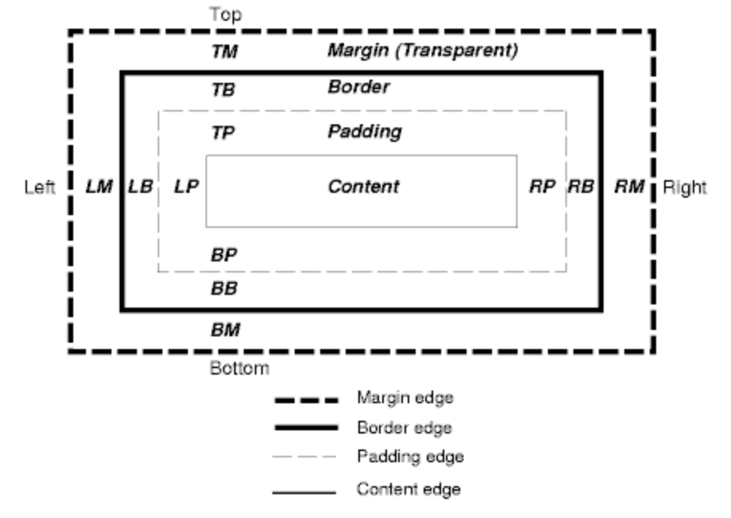

The margin, border and padding are CSS properties which alter the space in and around a piece of content on a website.
Margin is transparent and alters the space out side the border/element. If the content has a border then the margin will alter the space between the border and the next element. If the content has no border then the margin will alter the space between the content/element and the next closest element.
A border is a common design aesthetic which is used to frame the content.
Padding is transparent and alters the space between the content and the border. Note: not all content has a border and if the content doesn’t have a border then the padding will have no effect. Tip: You can increase the padding of a small piece of content you would like to have a bigger clickable area eg. a small icon. In this case by increasing the icons padding this area also becomes clickable.
References: Quora Stackoverflow